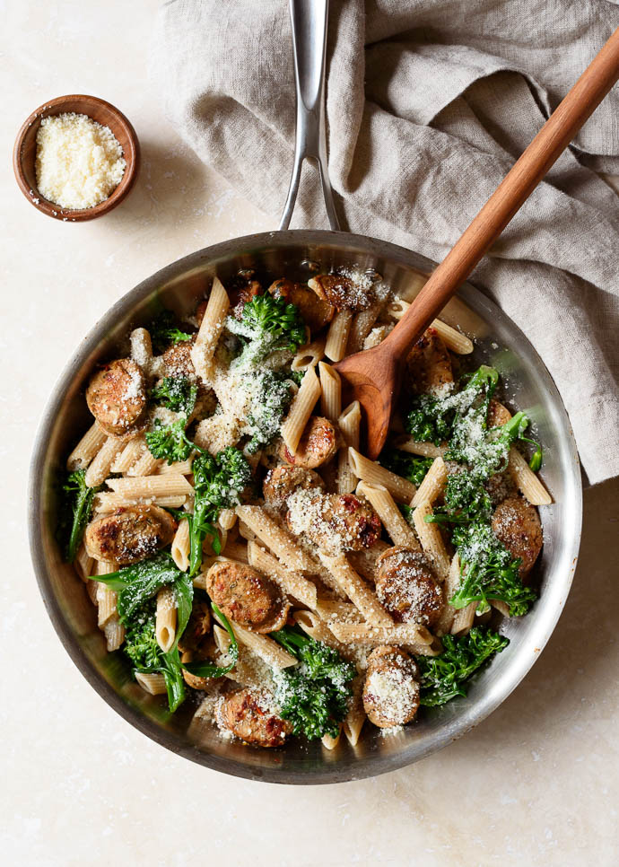

Pasta with Broccoli and Chicken Sausage

Description
A quick & easy recipe for pasta with broccoli and chicken sausage, a healthy, flavorful, and comforting dinner ready in 30 minutes. Gluten free friendly.
Ingredients
- 1/2 lb uncooked whole wheat penne pasta
- 2 Tbsp extra-virgin olive oil
- 1 Tbsp unsalted butter
- 1 garlic clove, finely minced
- 1 medium yellow or sweet onion, minced
- 4 (3 oz) links cooked/smoked chicken sausage, sliced
- 1 bunch broccoli, chopped into bite-sized pieces
- 3 oz Parmesan cheese, finely grated, plus more for serving
- kosher salt and freshly-ground black pepper, to taste
Steps
- Bring a large pot of salted water to a boil. Cook the pasta al dente, according to package directions (about 11 minutes).
- Meanwhile, heat the olive oil and butter in a large skillet over medium-heat, until the butter is melted and the oil just begins to shimmer.
- Add the garlic and onion, and cook, stirring occasionally, until just softened, about 2 minutes.
- Add the chopped sausage to the skillet, and cook, stirring occasionally, until browned, about 5 minutes.
- During the last two minutes of cooking, add the chopped broccoli to the pasta pot. Drain, reserving about 1/4 cup of pasta water.
- Add the drained pasta, broccoli, and reserved pasta water to the skillet with the sausage. Stir to combine.
- Add the Parmesan, and season with salt and pepper, to taste. Serve warm with an extra dusting of Parmesan. Enjoy!